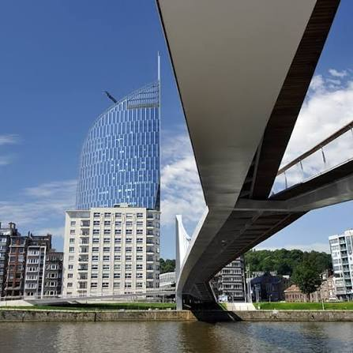

CityLoop Quest Liège


Liège se visite très bien à pied, mais il faut respecter son relief. Le centre historique est compact ; les Coteaux, Bueren ou certains quartiers hauts demandent plus d’effort. De bonnes chaussures font plus pour le confort qu’un planning héroïque.
La gare des Guillemins se trouve au sud du centre. On peut rejoindre la Boverie à pied par la passerelle La Belle Liégeoise, puis continuer vers Avroy ou le centre. C’est souvent l’arrivée la plus agréable pour comprendre la ville contemporaine avant le cœur ancien.
Les bus et le tram aident à relier les zones plus éloignées ou à éviter un retour trop long. Pour les excursions Explorer, la voiture reste parfois la solution la plus simple, surtout vers les châteaux, les vallées ardennaises ou les sites naturels.
Le conseil le plus utile : ne surchargez pas la journée. Liège donne beaucoup en peu de distance, mais les escaliers, les pavés, les musées et les pauses gourmandes prennent du temps. Un bon rythme vaut mieux qu’une liste cochée au pas de charge.